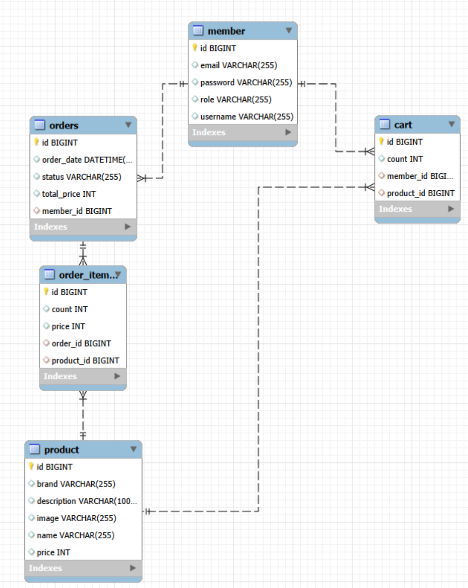

BACKEND DEVELOPER
Spring Boot Developer building practical and reliable web services.
A backend developer focused on building practical web services.
안녕하세요.
백엔드 개발자를 목표로 공부하고 있는
이도형입니다.
Java와 Spring Boot를 기반으로
웹 서비스를 직접 설계하고 구현하면서
백엔드 개발의 기본적인 구조와
데이터 흐름을 학습하고 있습니다.
특히 Controller, Service, Repository, Entity가
각각 어떤 역할을 하는지 이해하고
이를 실제 프로젝트에 적용하는 것을
중요하게 생각하고 있습니다.
개인 프로젝트로
Spring Boot 기반의 온라인 쇼핑몰
LAYER Select Shop을 구현했습니다.
회원가입과 로그인,
Spring Security 인증 및 권한 관리,
상품 CRUD,
상품 검색과 브랜드 조회,
장바구니,
주문 및 주문 내역,
관리자 기능까지 직접 구현했습니다.
개발 과정에서 발생한 오류를
원인을 찾아 하나씩 해결하면서
단순히 코드를 작성하는 것을 넘어
문제를 분석하고 해결하는 개발 경험을
쌓는 것을 목표로 하고 있습니다.
Technologies I use while building backend web services.
Projects built through hands-on backend development.
Spring Boot 기반 개인 온라인 쇼핑몰
실제 온라인 쇼핑몰의 기본적인 사용자 흐름을
직접 구현한 개인 프로젝트입니다.
회원가입과 로그인,
상품 조회 및 검색,
브랜드별 상품 조회,
신상품 조회,
장바구니,
주문 및 주문 내역,
관리자 상품·회원·주문 관리까지
쇼핑몰의 핵심 기능을 구현했습니다.
Spring Security를 활용하여
사용자 인증과 권한 관리를 구성했으며,
Spring Data JPA를 통해
Member, Product, Cart, Order, OrderItem 등의
Entity를 MySQL과 연동했습니다.
개발 과정에서는 단순히 기능을 완성하는 것에 그치지 않고
Controller → Service → Repository → Database로
이어지는 데이터 흐름을 직접 구현하면서
각 계층의 역할을 이해하는 것을 목표로 했습니다.
개인 개발자 포트폴리오 웹사이트
백엔드 개발자로서의 기술 스택과
프로젝트 경험을 정리하기 위해
제작한 개인 포트폴리오 사이트입니다.
HTML과 CSS를 기반으로 직접 제작했으며
GitHub를 통해 소스 코드를 관리하고
Vercel을 통해 배포했습니다.
반응형 레이아웃을 적용하여
다양한 화면 크기에서 확인할 수 있도록 구성했습니다.
Feel free to contact me anytime.
Backend Project Case Study
LAYER Select Shop은
온라인 쇼핑몰의 주요 사용자 흐름과
관리자 기능을 직접 구현해보기 위해 제작한
개인 웹 프로젝트입니다.
사용자가 회원가입을 하고 로그인한 뒤
상품을 조회하고 검색하며,
원하는 상품을 장바구니에 담아
주문할 수 있도록 구성했습니다.
또한 관리자 영역을 별도로 구성하여
상품 등록·수정·삭제,
회원 관리,
주문 조회 및 주문 상태 변경 기능을
구현했습니다.
프로젝트 전체 과정에서
Spring Boot의 계층형 구조와
Spring Security의 인증·인가,
JPA Entity 관계,
데이터베이스 연동을 직접 구현하며
백엔드 개발의 기본 구조를 이해하는 데
집중했습니다.
회원가입
로그인 / 로그아웃
아이디 중복확인
이메일 중복확인
My Page
Spring Security 적용
BCrypt 비밀번호 암호화
인증 사용자 처리
USER / ADMIN 권한 분리
상품 등록
상품 수정
상품 삭제
상품 상세 조회
상품 검색
브랜드별 조회
신상품 조회
장바구니 추가
동일 상품 수량 증가
수량 증가 / 감소
상품 삭제
총 금액 계산
장바구니 기반 주문 생성
주문 상품 생성
주문 금액 계산
주문 완료 화면
회원 주문 내역 조회
상품 관리
회원 관리
주문 관리
주문 상세 조회
주문 상태 변경
Controller에서는 HTTP 요청과 응답을 처리하고,
Service에서는 회원가입, 장바구니, 주문 생성 등
핵심 비즈니스 로직을 담당하도록 구성했습니다.
Repository는 Spring Data JPA를 이용하여
데이터베이스 접근을 담당하도록 분리했습니다.
Entity는 Member, Product, Cart, Order, OrderItem으로
구성했으며,
JPA 연관관계를 활용하여
회원과 주문,
주문과 주문 상품,
상품과 장바구니 등의
데이터 관계를 표현했습니다.
프로젝트에서는 MySQL을 데이터베이스로 사용하고
Spring Data JPA를 통해 Entity와 데이터베이스를
연결했습니다.
핵심 Entity는 다음과 같이 구성했습니다.
id
username
password
email
role
id
name
brand
price
image
description
id
member
product
count
id
member
totalPrice
orderDate
status
orderItems
id
order
product
count
price

Spring Security를 사용하여
로그인 인증과 사용자 권한 관리를 구현했습니다.
회원가입 시 PasswordEncoder를 사용하여
사용자의 비밀번호를 BCrypt 방식으로 암호화한 뒤
데이터베이스에 저장하도록 구성했습니다.
로그인 과정에서는
UserDetailsService를 구현한
CustomerDetailsService에서
username을 기반으로 회원을 조회하고
사용자의 권한을 Spring Security에 전달하도록 구현했습니다.
또한 관리자 URL인
/admin/**에 대해
ADMIN 권한을 가진 사용자만 접근할 수 있도록
권한을 제한했습니다.
.requestMatchers("/admin/**")
.hasRole("ADMIN")Problem
프로젝트 초기에는
Controller에서 Repository를 직접 호출하여
데이터를 처리하는 방식으로 기능을 구현했습니다.
하지만 상품, 회원, 장바구니, 주문 등
기능이 늘어나면서
Controller에서 데이터 조회와 처리 로직이
함께 섞이기 시작했습니다.
Solution
Service 계층을 별도로 구성하여
비즈니스 로직을 Service로 이동했습니다.
이후 Controller는 요청을 받고
Service를 호출하는 역할에 집중하도록
구조를 분리했습니다.
Result
Controller → Service → Repository 구조를 적용하면서 각 계층의 책임을 명확하게 구분할 수 있었습니다.
Problem
로그인 기능을 구현하면서 Spring Security가 인증 과정에서 데이터베이스의 회원 정보를 조회하고 권한까지 전달해야 했습니다.
Solution
UserDetailsService를 구현하고
MemberRepository를 사용하여
username을 기준으로 회원을 조회했습니다.
조회한 Member의 username,
암호화된 password,
role을 이용하여
Spring Security의 UserDetails로 변환했습니다.
Member member =
memberRepository.findByUsername(username);
return new User(
member.getUsername(),
member.getPassword(),
List.of(
new SimpleGrantedAuthority(
member.getRole()
)
)
);Problem
장바구니에 담긴 상품을 실제 주문 데이터로 변환하는 과정에서 회원, 상품, 수량, 가격 정보를 연결해야 했습니다.
Solution
현재 로그인한 회원의 장바구니를 조회한 뒤
각각의 Cart 데이터를 OrderItem으로 변환했습니다.
이후 주문 총 금액을 계산하고,
주문이 생성된 뒤 기존 장바구니 데이터를
삭제하도록 처리했습니다.
for (Cart cart : cartList) {
OrderItem orderItem = new OrderItem();
orderItem.setOrder(order);
orderItem.setProduct(cart.getProduct());
orderItem.setCount(cart.getCount());
orderItem.setPrice(
cart.getProduct().getPrice()
);
orderItemRepository.save(orderItem);
}Problem
이미 장바구니에 들어있는 상품을 다시 추가했을 때 동일한 상품이 여러 행으로 생성되지 않고 수량이 증가하도록 처리할 필요가 있었습니다.
Solution
Member와 Product를 함께 기준으로
기존 Cart 데이터를 조회한 뒤,
기존 데이터가 존재하면 count를 증가시키고,
존재하지 않는 경우에만
새로운 Cart를 생성하도록 구현했습니다.
Spring Data JPA의 메서드 네이밍을 활용하여 검색과 브랜드 조회 기능을 구현했습니다.
List<Product>
findByNameContainingOrBrandContaining(
String name,
String brand
);
List<Product>
findByBrand(String brand);
@Query("""
select distinct p.brand
from Product p
order by p.brand
""")
List<String> findDistinctBrands();DTO를 Entity로 변환한 뒤 Repository를 통해 저장하도록 구성했습니다.
public void save(ProductCreateDto dto) {
Product product = new Product();
product.setName(dto.getName());
product.setBrand(dto.getBrand());
product.setPrice(dto.getPrice());
product.setImage(dto.getImage());
product.setDescription(dto.getDescription());
productRepository.save(product);
}URL 패턴에 따라 관리자 권한과 일반 사용자 접근을 분리했습니다.
.requestMatchers("/admin/**")
.hasRole("ADMIN")
.requestMatchers(
"/",
"/login",
"/member/signup",
"/product/**",
"/brands",
"/brands/**",
"/search",
"/list",
"/new"
)
.permitAll()
.anyRequest()
.authenticated()
LAYER Select Shop 프로젝트를 통해
Spring Boot 기반 웹 애플리케이션의
전체적인 개발 흐름을 직접 경험했습니다.
특히 Controller, Service, Repository의
역할을 분리하면서
계층형 아키텍처의 필요성을 이해했고,
Spring Data JPA를 활용하여
Entity와 Repository를 구성하고
실제 MySQL 데이터베이스와 연동하는
과정을 경험했습니다.
또한 Spring Security를 직접 적용하면서
단순한 로그인 구현을 넘어
인증과 권한이 어떻게 연결되는지
이해할 수 있었습니다.
무엇보다 구현 과정에서 발생한 오류를
하나씩 원인을 확인하고 수정하면서
문제를 해결하는 개발 과정 자체를
경험할 수 있었습니다.